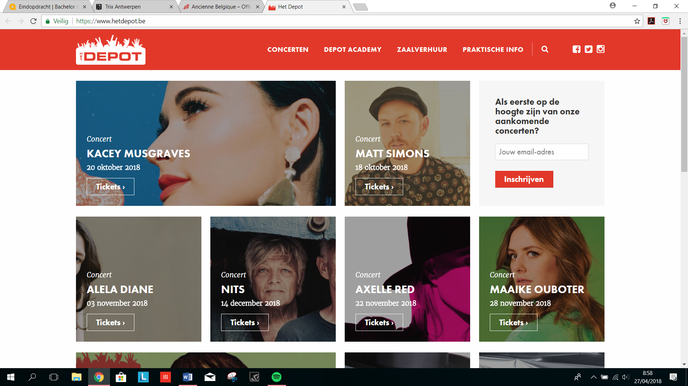

2 navigatiebalken: één met belangrijkste, één met iets minder belangrijke
HOMEPAGE: Eerstvolgende concerten, Nieuws
Onderaan: Contact (link naar e-mail), Openingsuren onthaal/telefonische bereikbaarheid, extra navigatiebalk onderaan, invulmogelijkheid nieuwsbrief, linken naar social media en sponsors.
CONCERTEN: Filtermogelijkheid (Genre, soort event), knoppen om event te volgen op social media, video’s, bereikbaarheid onder elk concert (plan je route knop, bekijk op google maps), knoppen gelijkaardige concerten en music youtube video’s
PRAKTISCHE INFO: Aparte artikels (Openbaar vervoer, Te voet of met de fiets, Met de auto, Lockers,….)
VEEL LEES MEER… --> je klikt door, maar duidelijke lay-out en navigatie
Meertalen
Knopje rechtsboven de meeste concertfoto’s/advertenties (Speelt muziek)
Contacteer formulier (Waarover met genoeg opties, ook optie voor andere info)
Negatief
Wat is het begin van de homepage? Willekeurige concerten? Beetje warrig.
Interactief google maps mapje, niet enkel link
Enkel Nederlands/Engelstalig
Veelgestelde vragen?
Maar 4 betaalmogelijkheiden: Bankcontact, iDEAL, KBC-touch, Kredietkaart(Mastercard) PAYPAL? OVERSCHRIJVING?
HOMEPAGE: Vandaag in AB, Net aangekondigd, Nieuws, Mobiliteit, Honger voor het concert en mogelijkheid om drankjetons al te kopen
Onderaan: extra navigatiebalk onderaan, invulmogelijkheid nieuwsbrief, linken naar social media en sponsors: als je met je cursor op een logo staat krijgt het kleur.
Mogelijkheid om je Spotify en Facebook te linken zodat je enkel je favoriete artiesten ziet.
Filtermogelijkheid: Kalender (maanden), Soort event, Genres,…
CONCERTEN: Link naar facebook-event, Video’s, Meer AB aanbevelingen, FANMAIL: mogelijkheid om je eigen muzikale ontdekking in te sturen.
Bij het maken van account krijg je de mogelijkheid om trajectinfo op maat te krijgen dmv uw adres in te vullen + spotify toevoegen
NIEUWS: lees meer + wedstrijden
PRAKTISCH: tabel van treinuren na het concert, ofwel interactief google maps mapje (bereken je route) of een zelfgemaakt duidelijk mapje
Duidelijke info verschillende zalen + foto’s + AB 360 tour
Zoekfunctie
Extra navigatiebalkje dat verschijnt onder het woord meer (plaatsbesparend)
Interactief logootje als je er met je cursor over gaat
Negatief
AGENDA: Agenda klinkt zo vaag, concerten zou beter zijn
Moet op het concert klikken om te weten wat de prijs is (prijzen exclusief reservatiekosten, staat er in kleine lettertjes onder)
Moet een account hebben om ticket te kunnen betalen. (Extra mogelijkheid zoals tijdelijk account of als gast??)
Maar 2 betaalmogelijkheden: Bankcontact en Kredietkaart
NIEUWS: als je naar beneden scrolt kom je terecht bij de wedstrijden. Misschien een navigatiebalkje aan de zijkant waar den Nieuws en Wedstrijden staan.
PRAKTISCH: enkel tekst, geen foto’s
PRAKTISCH: wat veel door elkaar. Je moet veel doorklikken om te weten te komen wat je nodig hebt.
Lay-out
Duidelijke homepage: grote foto met vanonder net een titel (net aangekondigd). Spoort aan om door te scrollen.
Wat mindere pages: Agenda, Praktisch
Het Depot, Leuven ( https://www.hetdepot.be/ )

Positief
Als je naar beneden scrolt komt er een extra schermpje of je geïnteresseerd bent in de nieuwsbrief van het depot.
Onderaan extra navigatiemenu / praktische info: adres, telefoonnummer en mailadres
Bovenaan links naar social media
Zoekfunctie
CONCERTEN: klein blokje met nieuwe concerten + per maand te bekijken
Mogelijkheid om digitaal ticket op je gsm te hebben
Interactief google maps kaartje + mogelijkheid om je route te berekenen
Negatief
Homepage is een geordend rommeltje, het zijn allemaal concerten door elkaar, niet volgens datum, populariteit etc.
Voor de prijs te bekijken moet je echt op tickets klikken
Geen mogelijkheid voor overschrijven
Weinig tot geen beeldmateriaal
Niet veel info over artiesten en support acts
Lay-out
Eenvoudig, Het meeste is er wat er zou moeten zijn. De noodzakelijke informatie is aanwezig. Wat meer beeldmateriaal en variatie mag